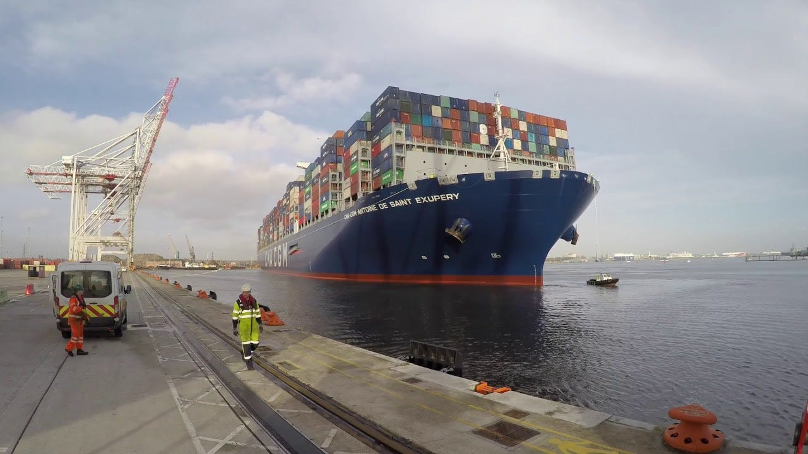
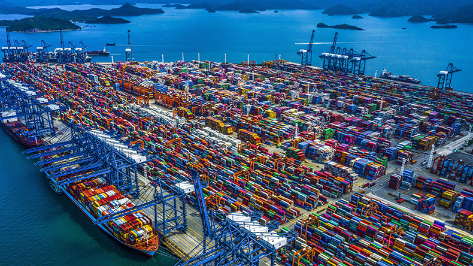
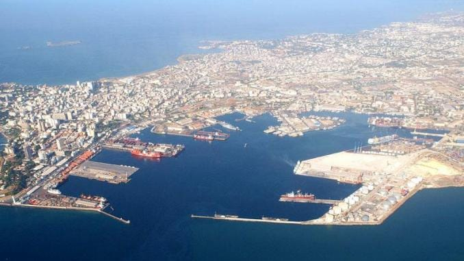
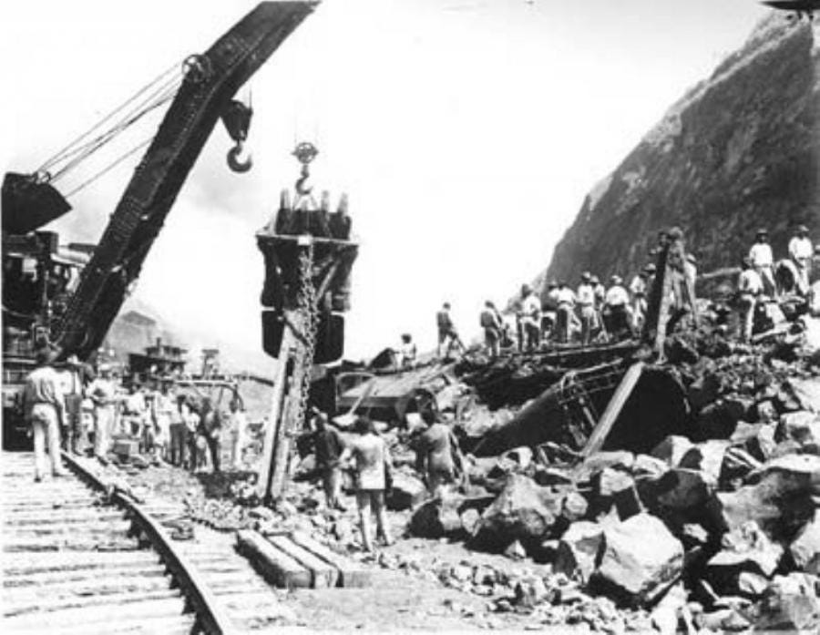
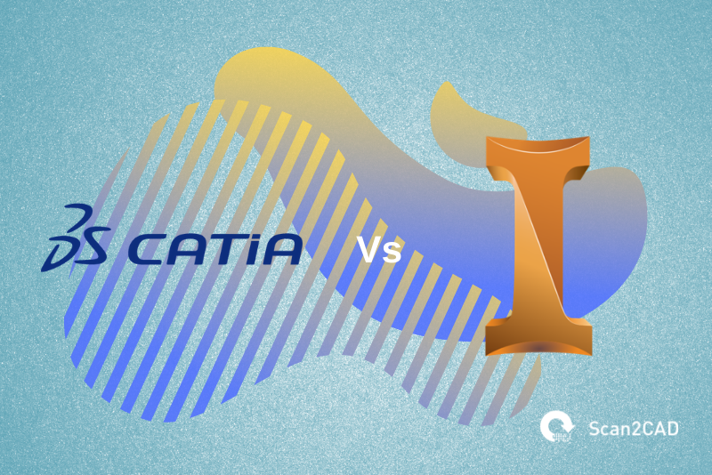

Feb 8
These revolutionary Transportation systems
Panama and the transformability of medium of transportation of ships and planes

We decided that it doesn't matter for a big chip of containers to be able to transform itself into a land motorized vehicle once at the edge of the ocean for it to be able to take the road or rail to transverse this whole continent that could be Africa for reaching this other ocean and continuing its path to Europe America or Australia. Maybe we just decided that this was not so important to build ships like that and decided to dig smartly and successfully tonnes of sand to connect the Atlantic ocean to the …. ocean. Opening widely my eyes let me see this solution that could be efficient to operate and could support this growing trend of containerized products transiting from continent to content due to the e-commerce revolution and the emergence of China.

The building of the canal of Panama was a big event and this infrastructure played an important economic role whose impact on global growth is positive one could calculate this level of growth contribution but we are not forced to use the same solutions that made our success in the past and it’s truer when the available tools and options make it easy to see and do differently. One day, One asked me if it was possible to build a train that runs on oceans I responded yes seeing staked ships running on the oceans like trains and I was not seeing that maybe it is possible to build a railroad between Africa and America on top of the Atlantic ocean like how we are building routes of fiber cables between these two continents. But you see that I am not taking care of the mood of oceans and I know that due to climate they can be monstrous destroyers then maybe building railroads on top of oceans isn't a so smart idea but making ships able to run on railroads or asphalt road certainly is. This will require designing new kinds of harbor (ports ). Apart from this feature that would allow ships to take another medium of transportation why containers should be stored near ports when there is more space deep into the country that would support economic growth?

and this is true for every country that has ports or plans to build some in the future not only the country of this port shown in the picture above.
Better this new transportation system will be if it is embeddable to already built ships for containers and of course if the Sahara will be traversed a system should take care of protecting the ships from sand storms. Is all that I am describing complex and impossible while we have built so much more complex things when the tools and possibilities were reduced. With what have we built the canal of Panama?

Way less than the tools and possibilities that we have today in a wired and automated and leveraged power world where pulling tonnes of materials is just a matter of how much energy to use said differently how much oil to burn, how much wind and solar light to exploit, or how much of any other kind of material transformable to energy like this ship is transformable into railroad or asphalt road vehicle.
I was really willing to dive into Catia and Investor to make some schematic illustration of this concept that I am describing but the danger of schematization is that it could be done poorly and feel kiddy which will not let the concept feel serious and this is a serious project that could make the world save energy by rethinking the world global transportation system and making it fit the future expected commercial growth.

But the world is filled with talented engineers like you who could grasp this concept and turn it into a very impressive digital illustration that could make this concept funded and started.
For the business model part of this infrastructure and the ecosystems of services and products that it will spawn there are great business and marketing folks like you who could handle it.